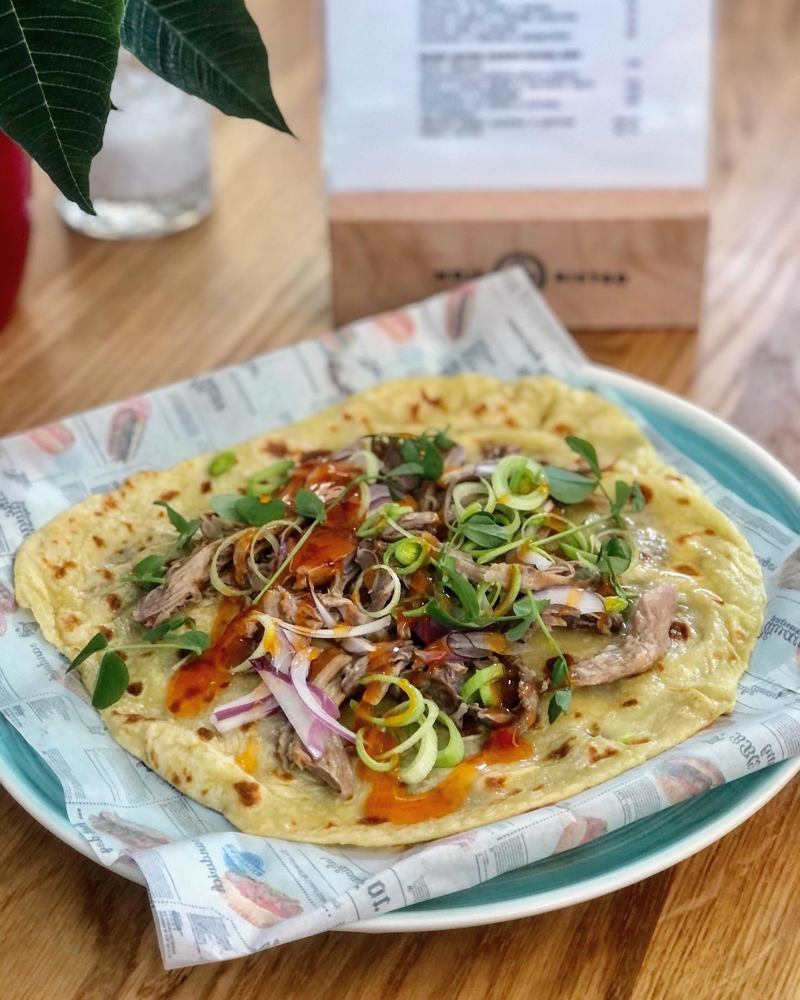

ZASTAVTE SA NA MALÝ #slowfood
• lokša-trhané-cibuľa-por-sladká chilli
omáčka
#lunchmenu #svatomartinskehody #kaldoun
#bramborovelokse #zemiakovelokse #trhanemaso #pulledmeat #svatomartinskerohlicky
#mojebistro #chodov #food #jidlo #polevka #praha #prague #food #ranajky #takeaway #nejlepsichlebanajiznimmeste